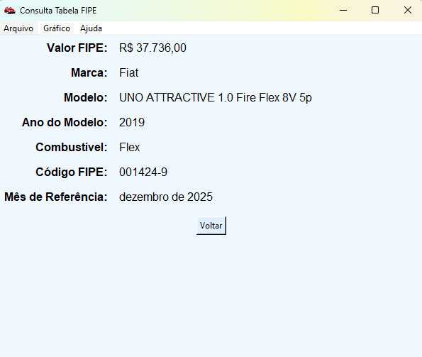
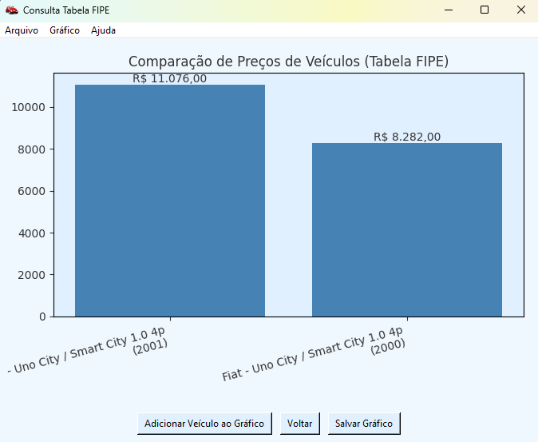

A ferramenta definitiva para análise de preços de veículos.
Consulte, compare e analise o valor de mercado de carros, motos e caminhões de forma rápida e intuitiva. Uma aplicação desktop completa para lojistas, consultores e entusiastas.
Saiba Mais e Baixe AgoraFuncionalidades Poderosas
Busca Detalhada
Navegue passo a passo por tipo, marca, modelo e ano. Um filtro dinâmico ajuda a encontrar o que você procura em listas longas rapidamente.
Gráfico Comparativo
Adicione veículos de várias consultas ou carregue de arquivos para comparar preços em um gráfico de barras claro e objetivo. Ideal para análise de mercado.
Exporte e Compartilhe
Salve consultas em JSON e exporte gráficos em alta qualidade (PNG, PDF, JPG). Compartilhe diretamente por E-mail ou WhatsApp com poucos cliques.
Cache Inteligente
A aplicação armazena suas buscas para acelerar a navegação. Ao voltar, os dados são carregados instantaneamente, economizando tempo e uso da API.
Simples, Rápido e Visual
1. Selecione o Veículo
Escolha o tipo, marca, modelo e ano em um fluxo guiado e intuitivo.
2. Veja o Resultado
Acesse todos os detalhes da consulta FIPE em uma tela limpa e organizada.
3. Compare no Gráfico
Adicione o veículo a um gráfico comparativo para analisar seu valor em relação a outros modelos.
Pronto para otimizar suas consultas?
Tenha em mãos a melhor ferramenta para análise de preços da Tabela FIPE.
Baixar Versão Mais Recente